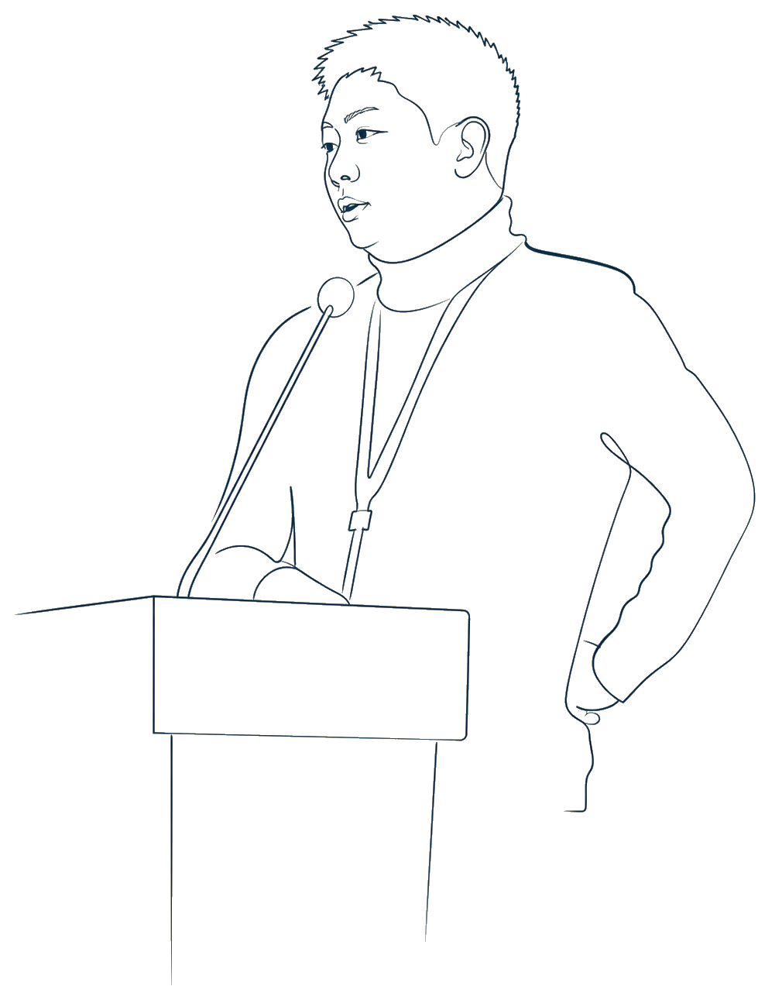

Hong-Wei Zhang
Professor
Institute for Advanced Study in Mathematics
Harbin Institute of Technology
Harbin Institute of Technology
No.92 West Da Zhi Street
150001, Harbin, China
Emails: zhanghw@hit.edu.cn (HIT) zhw.dimn@gmail.com (Gmail)
(My university email addresses at Paderborn, Ghent, and Orléans are no longer in use.)

Positions
- Since 2026.05
- Professor (tenure-track)Institute for Advanced Study in MathematicsHarbin Institute of Technology, China
- 2026.02—2026.04
- Visiting scholarInstitute for Advanced Study in MathematicsHarbin Institute of Technology, China
- 2023.07—2026.01
- Postdoctoral researcherPaderborn University, GermanyMentor: Tobias Weich ↗
- 2020.04—2023.06
- Postdoctoral researcherGhent University, BelgiumMentor: Michael Ruzhansky ↗
Education
- 2017.10—2020.12
- Ph.D. in MathematicsUniversity of Orléans, FranceSupervisors: Jean-Philippe Anker ↗ and Nicolas Burq ↗
- 2015.09—2017.09
- M.S. in MathematicsUniversity of Paris-Saclay (Orsay), France
- 2013.09—2015.06
- B.S. in MathematicsUniversity of Orléans, France